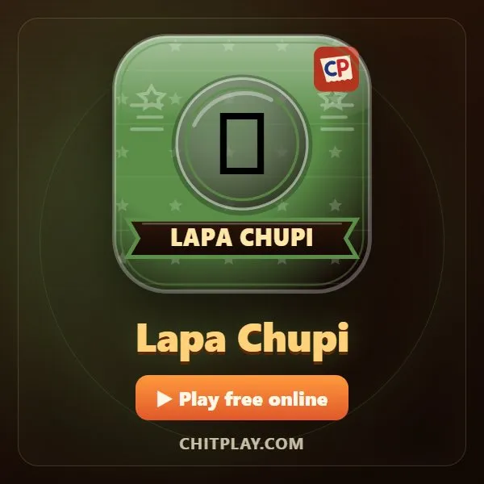
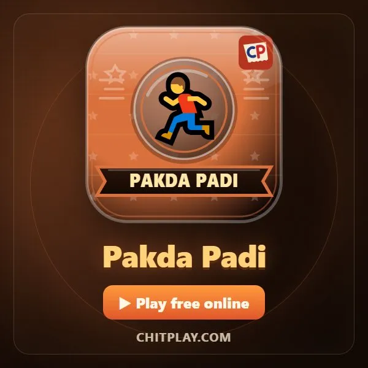

ChitPlay: 45+ game gratis untuk dimainkan bareng teman
ChitPlay adalah ruang tamu 3D berisi lebih dari 45 game papan, kartu, dan pesta yang bisa dimainkan gratis di browser. Ada permainan kertas lipat klasik Polisi dan Maling (di India disebut Raja Rani Chor Police), juga Ludo, Karambol, Catur, Ular Tangga, game kartu seperti Call Break, game pesta, dan game arkade di TV ruangan.
Tidak perlu unduh aplikasi atau buat akun. Buka tautannya, pilih nama, dan langsung main: sendiri melawan pemain komputer, online dengan orang dari seluruh dunia, atau bareng teman di dekatmu, masing-masing di HP sendiri. Untuk segala usia dan tanpa uang sungguhan.
📚 Ide permainan untuk setiap suasana
Cara bermain
- Sebagai tamu: Tanpa daftar dan tanpa login. Pilih nama dan langsung main.
- Lawan komputer: Kalau tidak ada teman, pemain komputer mengisi kursi kosong. Mudah, normal, atau sulit.
- Online: Duduk di meja umum bersama pemain dari seluruh dunia.
- Bareng teman di dekatmu: Buat permainan di satu HP lalu bagikan kode atau QR. Teman bergabung dari HP mereka.
- Di satu HP: Gantian pegang HP: satu perangkat cukup untuk seluruh keluarga.
Semua game

Empat kertas lipat, satu maling. Polisi harus menebaknya dari raut wajah. Di India: Raja Rani Chor Police.
▶ Main Panduan Bahasa Indonesia Aturan lengkap (Inggris)
Game pesta
 Siapa Mata-matanya? English: Who Is the Spy?Semua punya kata rahasia kecuali mata-mata. Temukan dia dari petunjuk.👥 4–10 pemain▶ MainPanduan Bahasa IndonesiaAturan lengkap (Inggris)
Siapa Mata-matanya? English: Who Is the Spy?Semua punya kata rahasia kecuali mata-mata. Temukan dia dari petunjuk.👥 4–10 pemain▶ MainPanduan Bahasa IndonesiaAturan lengkap (Inggris) Manusia Serigala English: Werewolf NightPeran rahasia, malam sunyi, dan pagi yang ramai. Temukan para serigala.👥 5–10 pemain▶ MainPanduan Bahasa IndonesiaAturan lengkap (Inggris)
Manusia Serigala English: Werewolf NightPeran rahasia, malam sunyi, dan pagi yang ramai. Temukan para serigala.👥 5–10 pemain▶ MainPanduan Bahasa IndonesiaAturan lengkap (Inggris) Truth or Dare English: Truth or DarePertanyaan jujur dan tantangan seru untuk segala usia. Boleh dilewati.👥 2–10 pemain▶ MainPanduan Bahasa IndonesiaAturan lengkap (Inggris)
Truth or Dare English: Truth or DarePertanyaan jujur dan tantangan seru untuk segala usia. Boleh dilewati.👥 2–10 pemain▶ MainPanduan Bahasa IndonesiaAturan lengkap (Inggris) Kertas Teka-teki English: Riddle ChitsBuka teka-teki dan pilih jawaban. Petunjuk mengurangi satu poin.👥 2–10 pemain▶ MainPanduan Bahasa IndonesiaAturan lengkap (Inggris)
Kertas Teka-teki English: Riddle ChitsBuka teka-teki dan pilih jawaban. Petunjuk mengurangi satu poin.👥 2–10 pemain▶ MainPanduan Bahasa IndonesiaAturan lengkap (Inggris) Suara Terbanyak English: Majority VoteTebak apa yang akan dipilih kebanyakan orang di meja.👥 3–10 pemain▶ MainPanduan Bahasa IndonesiaAturan lengkap (Inggris)
Suara Terbanyak English: Majority VoteTebak apa yang akan dipilih kebanyakan orang di meja.👥 3–10 pemain▶ MainPanduan Bahasa IndonesiaAturan lengkap (Inggris) Cerita Lipat English: ConsequencesTulis cerita baris demi baris di kertas terlipat, lalu buka semuanya.👥 3–8 pemain▶ MainPanduan Bahasa IndonesiaAturan lengkap (Inggris)
Cerita Lipat English: ConsequencesTulis cerita baris demi baris di kertas terlipat, lalu buka semuanya.👥 3–8 pemain▶ MainPanduan Bahasa IndonesiaAturan lengkap (Inggris)
Game papan
 Ludo English: LudoBawa empat bidakmu pulang. Dapat enam untuk keluar dan kirim lawan kembali.👥 2–4 pemain▶ MainPanduan Bahasa IndonesiaAturan lengkap (Inggris)
Ludo English: LudoBawa empat bidakmu pulang. Dapat enam untuk keluar dan kirim lawan kembali.👥 2–4 pemain▶ MainPanduan Bahasa IndonesiaAturan lengkap (Inggris) Karambol English: CarromSentil striker, masukkan bidakmu, dan tutup ratunya.👥 2 pemain▶ MainPanduan Bahasa IndonesiaAturan lengkap (Inggris)
Karambol English: CarromSentil striker, masukkan bidakmu, dan tutup ratunya.👥 2 pemain▶ MainPanduan Bahasa IndonesiaAturan lengkap (Inggris) Catur English: ChessPermainan lengkap: rokade, en passant, promosi, dan skakmat.👥 2 pemain▶ MainPanduan Bahasa IndonesiaAturan lengkap (Inggris)
Catur English: ChessPermainan lengkap: rokade, en passant, promosi, dan skakmat.👥 2 pemain▶ MainPanduan Bahasa IndonesiaAturan lengkap (Inggris) Ular Tangga English: Snakes and LaddersNaik tangga, hindari ular, dan berhenti tepat di 100.👥 2–4 pemain▶ MainPanduan Bahasa IndonesiaAturan lengkap (Inggris)
Ular Tangga English: Snakes and LaddersNaik tangga, hindari ular, dan berhenti tepat di 100.👥 2–4 pemain▶ MainPanduan Bahasa IndonesiaAturan lengkap (Inggris) Dam English: CheckersLompati bidak lawan dan jadikan bidakmu raja.👥 2 pemain▶ MainPanduan Bahasa IndonesiaAturan lengkap (Inggris)
Dam English: CheckersLompati bidak lawan dan jadikan bidakmu raja.👥 2 pemain▶ MainPanduan Bahasa IndonesiaAturan lengkap (Inggris) Empat Sejajar English: Four in a RowJatuhkan keping dan susun empat sejajar sebelum lawan.👥 2 pemain▶ MainPanduan Bahasa IndonesiaAturan lengkap (Inggris)
Empat Sejajar English: Four in a RowJatuhkan keping dan susun empat sejajar sebelum lawan.👥 2 pemain▶ MainPanduan Bahasa IndonesiaAturan lengkap (Inggris) Reversi English: ReversiApit warna lawan di antara bidakmu dan balikkan jadi milikmu.👥 2 pemain▶ MainPanduan Bahasa IndonesiaAturan lengkap (Inggris)
Reversi English: ReversiApit warna lawan di antara bidakmu dan balikkan jadi milikmu.👥 2 pemain▶ MainPanduan Bahasa IndonesiaAturan lengkap (Inggris) Congklak (Mancala) English: MancalaSebar biji di papan dan tangkap untuk mengisi lumbungmu.👥 2 pemain▶ MainPanduan Bahasa IndonesiaAturan lengkap (Inggris)
Congklak (Mancala) English: MancalaSebar biji di papan dan tangkap untuk mengisi lumbungmu.👥 2 pemain▶ MainPanduan Bahasa IndonesiaAturan lengkap (Inggris) Nine Men's Morris English: Nine Men’s MorrisBentuk barisan tiga untuk mengambil bidak dalam game strategi kuno ini.👥 2 pemain▶ MainPanduan Bahasa IndonesiaAturan lengkap (Inggris)
Nine Men's Morris English: Nine Men’s MorrisBentuk barisan tiga untuk mengambil bidak dalam game strategi kuno ini.👥 2 pemain▶ MainPanduan Bahasa IndonesiaAturan lengkap (Inggris)
Game kartu
 Color Clash English: Color ClashCocokkan warna atau angka, keluarkan +2 dan Pelangi +4, habiskan kartu duluan.👥 2–4 pemain▶ MainPanduan Bahasa IndonesiaAturan lengkap (Inggris)
Color Clash English: Color ClashCocokkan warna atau angka, keluarkan +2 dan Pelangi +4, habiskan kartu duluan.👥 2–4 pemain▶ MainPanduan Bahasa IndonesiaAturan lengkap (Inggris) Call Break English: Call BreakTebak jumlah trik lalu wujudkan. Sekop selalu jadi truf.👥 4 pemain▶ MainPanduan Bahasa IndonesiaAturan lengkap (Inggris)
Call Break English: Call BreakTebak jumlah trik lalu wujudkan. Sekop selalu jadi truf.👥 4 pemain▶ MainPanduan Bahasa IndonesiaAturan lengkap (Inggris) Crazy Eights English: Crazy EightsCocokkan jenis atau angka, pakai kartu delapan sebagai joker, habiskan kartu duluan.👥 2–4 pemain▶ MainPanduan Bahasa IndonesiaAturan lengkap (Inggris)
Crazy Eights English: Crazy EightsCocokkan jenis atau angka, pakai kartu delapan sebagai joker, habiskan kartu duluan.👥 2–4 pemain▶ MainPanduan Bahasa IndonesiaAturan lengkap (Inggris)
Game arkade (di TV, dalam 3D)
 Flying Chit English: Flying ChitTerbangkan kertas bersayap melewati gelang di kelas tanpa akhir, raih kombo, dan kumpulkan koin untuk membuka gaya 3D baru.👥 1–4 pemain▶ MainPanduan Bahasa IndonesiaAturan lengkap (Inggris)
Flying Chit English: Flying ChitTerbangkan kertas bersayap melewati gelang di kelas tanpa akhir, raih kombo, dan kumpulkan koin untuk membuka gaya 3D baru.👥 1–4 pemain▶ MainPanduan Bahasa IndonesiaAturan lengkap (Inggris) Tunnel Race English: Tunnel RacePesawat kertas di terowongan tanpa akhir. Hindari dinding dan ambil permata.👥 1–4 pemain▶ MainPanduan Bahasa IndonesiaAturan lengkap (Inggris)
Tunnel Race English: Tunnel RacePesawat kertas di terowongan tanpa akhir. Hindari dinding dan ambil permata.👥 1–4 pemain▶ MainPanduan Bahasa IndonesiaAturan lengkap (Inggris) Turbo Tunnel English: Turbo TunnelBalap mobil di dalam terowongan tanpa akhir. Hindari lalu lintas, laser dan batu jatuh, ambil nitro.👥 1–4 pemain▶ MainPanduan Bahasa IndonesiaAturan lengkap (Inggris)
Turbo Tunnel English: Turbo TunnelBalap mobil di dalam terowongan tanpa akhir. Hindari lalu lintas, laser dan batu jatuh, ambil nitro.👥 1–4 pemain▶ MainPanduan Bahasa IndonesiaAturan lengkap (Inggris) Waktu Reaksi English: Reaction TimeTunggu hijau, lalu ketuk secepat mungkin. Siapa yang paling cepat refleksnya?👥 1–4 pemain▶ MainPanduan Bahasa IndonesiaAturan lengkap (Inggris)
Waktu Reaksi English: Reaction TimeTunggu hijau, lalu ketuk secepat mungkin. Siapa yang paling cepat refleksnya?👥 1–4 pemain▶ MainPanduan Bahasa IndonesiaAturan lengkap (Inggris) Hoop Flick English: Hoop FlickTarik, lepas, dan masukkan bola ke ring berikutnya. Masuk bersih berturut-turut jadi kombo.👥 1–2 pemain▶ MainPanduan Bahasa IndonesiaAturan lengkap (Inggris)
Hoop Flick English: Hoop FlickTarik, lepas, dan masukkan bola ke ring berikutnya. Masuk bersih berturut-turut jadi kombo.👥 1–2 pemain▶ MainPanduan Bahasa IndonesiaAturan lengkap (Inggris) Ghost Hostel English: Ghost HostelSatu malam di asrama berhantu. Tidur untuk koin, perkuat pintu, dan bertahan sampai pagi.👥 1–4 pemain▶ MainPanduan Bahasa IndonesiaAturan lengkap (Inggris)
Ghost Hostel English: Ghost HostelSatu malam di asrama berhantu. Tidur untuk koin, perkuat pintu, dan bertahan sampai pagi.👥 1–4 pemain▶ MainPanduan Bahasa IndonesiaAturan lengkap (Inggris) Pin Spin English: Pin SpinTancapkan paku payung ke papan gabus yang berputar tanpa menyentuh yang lain.👥 1–4 pemain▶ MainPanduan Bahasa IndonesiaAturan lengkap (Inggris)
Pin Spin English: Pin SpinTancapkan paku payung ke papan gabus yang berputar tanpa menyentuh yang lain.👥 1–4 pemain▶ MainPanduan Bahasa IndonesiaAturan lengkap (Inggris) Ship Fight English: Ship FightDua kapal, meriam menembak terus. Menghindar, bidik, dan tenggelamkan kapal temanmu.👥 2 pemain▶ MainPanduan Bahasa IndonesiaAturan lengkap (Inggris)
Ship Fight English: Ship FightDua kapal, meriam menembak terus. Menghindar, bidik, dan tenggelamkan kapal temanmu.👥 2 pemain▶ MainPanduan Bahasa IndonesiaAturan lengkap (Inggris) Bull Fight English: Bull FightDua banteng di arena pasir. Seruduk dan dorong yang lain keluar lingkaran.👥 2 pemain▶ MainPanduan Bahasa IndonesiaAturan lengkap (Inggris)
Bull Fight English: Bull FightDua banteng di arena pasir. Seruduk dan dorong yang lain keluar lingkaran.👥 2 pemain▶ MainPanduan Bahasa IndonesiaAturan lengkap (Inggris) Duel Gasing English: Spin DuelLuncurkan gasing ke arena sekolah dalam tiga detik. Putaran cepat menghasilkan benturan lebih kuat.👥 2 pemain▶ MainPanduan Bahasa IndonesiaAturan lengkap (Inggris)
Duel Gasing English: Spin DuelLuncurkan gasing ke arena sekolah dalam tiga detik. Putaran cepat menghasilkan benturan lebih kuat.👥 2 pemain▶ MainPanduan Bahasa IndonesiaAturan lengkap (Inggris) Adu Pena English: Pen FightLuncurkan pena di atas meja sekolah dan jatuhkan pena lawan.👥 2 pemain▶ MainPanduan Bahasa IndonesiaAturan lengkap (Inggris)
Adu Pena English: Pen FightLuncurkan pena di atas meja sekolah dan jatuhkan pena lawan.👥 2 pemain▶ MainPanduan Bahasa IndonesiaAturan lengkap (Inggris)
Petak Umpet English: Lapa ChupiBersembunyi di taman atau cari semua pemain. Manfaatkan semak dan bangku sebelum waktu habis.👥 2–4 pemain▶ MainPanduan Bahasa IndonesiaAturan lengkap (Inggris) Tag Beku English: Baraf PaniBekukan pelari dengan menyentuh mereka; teman satu tim dapat membebaskan pemain yang membeku.👥 3–4 pemain▶ MainPanduan Bahasa IndonesiaAturan lengkap (Inggris)
Tag Beku English: Baraf PaniBekukan pelari dengan menyentuh mereka; teman satu tim dapat membebaskan pemain yang membeku.👥 3–4 pemain▶ MainPanduan Bahasa IndonesiaAturan lengkap (Inggris)
Kejar-kejaran English: Pakda PadiPermainan kejar-kejaran cepat di taman. Sentuh pemain lain untuk meneruskan giliran pengejar.👥 2–4 pemain▶ MainPanduan Bahasa IndonesiaAturan lengkap (Inggris) Road Dash English: Road DashBajaj di jalan tanpa ujung. Hindari sapi dan bus, kumpulkan koin.👥 1–4 pemain▶ MainPanduan Bahasa IndonesiaAturan lengkap (Inggris)
Road Dash English: Road DashBajaj di jalan tanpa ujung. Hindari sapi dan bus, kumpulkan koin.👥 1–4 pemain▶ MainPanduan Bahasa IndonesiaAturan lengkap (Inggris) Backyard Rally English: Backyard RallyRaket dan bola di halaman. Reli makin cepat; yang duluan tujuh menang.👥 2 pemain▶ MainPanduan Bahasa IndonesiaAturan lengkap (Inggris)
Backyard Rally English: Backyard RallyRaket dan bola di halaman. Reli makin cepat; yang duluan tujuh menang.👥 2 pemain▶ MainPanduan Bahasa IndonesiaAturan lengkap (Inggris) Hungry Snake English: Hungry SnakeMakan camilan, makin panjang, jangan menabrak apa pun. Game ular klasik.👥 1–4 pemain▶ MainPanduan Bahasa IndonesiaAturan lengkap (Inggris)
Hungry Snake English: Hungry SnakeMakan camilan, makin panjang, jangan menabrak apa pun. Game ular klasik.👥 1–4 pemain▶ MainPanduan Bahasa IndonesiaAturan lengkap (Inggris)
Game dadu
 Yacht (dadu) English: YachtLima dadu, tiga lemparan, dua belas kategori. Pilih skor dengan cerdas.👥 2–4 pemain▶ MainPanduan Bahasa IndonesiaAturan lengkap (Inggris)
Yacht (dadu) English: YachtLima dadu, tiga lemparan, dua belas kategori. Pilih skor dengan cerdas.👥 2–4 pemain▶ MainPanduan Bahasa IndonesiaAturan lengkap (Inggris) Pig (dadu) English: PigTerus lempar atau simpan poin, tapi angka 1 menghapus seluruh giliran.👥 2–4 pemain▶ MainPanduan Bahasa IndonesiaAturan lengkap (Inggris)
Pig (dadu) English: PigTerus lempar atau simpan poin, tapi angka 1 menghapus seluruh giliran.👥 2–4 pemain▶ MainPanduan Bahasa IndonesiaAturan lengkap (Inggris)
Game kertas dan pensil
 Tes Stroop English: Stroop TestTulisannya MERAH, tintanya biru: ketuk tintanya. Game otak untuk fokus dan kecepatan.👥 1–4 pemain▶ MainPanduan Bahasa IndonesiaAturan lengkap (Inggris)
Tes Stroop English: Stroop TestTulisannya MERAH, tintanya biru: ketuk tintanya. Game otak untuk fokus dan kecepatan.👥 1–4 pemain▶ MainPanduan Bahasa IndonesiaAturan lengkap (Inggris) Memori Angka English: Number MemorySebuah angka muncul lalu hilang. Ketik kembali. Tiap ronde bertambah satu digit: berapa yang kamu ingat?👥 1–4 pemain▶ MainPanduan Bahasa IndonesiaAturan lengkap (Inggris)
Memori Angka English: Number MemorySebuah angka muncul lalu hilang. Ketik kembali. Tiap ronde bertambah satu digit: berapa yang kamu ingat?👥 1–4 pemain▶ MainPanduan Bahasa IndonesiaAturan lengkap (Inggris) Tebak Kata English: Word GuessSatu kata tersembunyi, satu petunjuk, dan satu huruf setiap kali. Tebak lebih awal untuk poin lebih banyak, tapi hanya sekali coba.👥 1–4 pemain▶ MainPanduan Bahasa IndonesiaAturan lengkap (Inggris)
Tebak Kata English: Word GuessSatu kata tersembunyi, satu petunjuk, dan satu huruf setiap kali. Tebak lebih awal untuk poin lebih banyak, tapi hanya sekali coba.👥 1–4 pemain▶ MainPanduan Bahasa IndonesiaAturan lengkap (Inggris) Mengetik Cepat English: Fast TypingSebuah kata muncul: ketik persis, secepat mungkin. Sepuluh kata, makin lama makin panjang.👥 1–4 pemain▶ MainPanduan Bahasa IndonesiaAturan lengkap (Inggris)
Mengetik Cepat English: Fast TypingSebuah kata muncul: ketik persis, secepat mungkin. Sepuluh kata, makin lama makin panjang.👥 1–4 pemain▶ MainPanduan Bahasa IndonesiaAturan lengkap (Inggris) Bingo English: BingoKartu 5 × 5 milikmu sendiri berisi 1 sampai 25. Bergantian sebut angka; yang pertama menyelesaikan lima garis teriak BINGO.👥 2–4 pemain▶ MainPanduan Bahasa IndonesiaAturan lengkap (Inggris)
Bingo English: BingoKartu 5 × 5 milikmu sendiri berisi 1 sampai 25. Bergantian sebut angka; yang pertama menyelesaikan lima garis teriak BINGO.👥 2–4 pemain▶ MainPanduan Bahasa IndonesiaAturan lengkap (Inggris) Teka-teki Parkir English: Unblock PuzzleSebuah bajaj terjebak di parkiran penuh. Geser mobil dan truk, lalu keluarkan lewat gerbang.👥 1–4 pemain▶ MainPanduan Bahasa IndonesiaAturan lengkap (Inggris)
Teka-teki Parkir English: Unblock PuzzleSebuah bajaj terjebak di parkiran penuh. Geser mobil dan truk, lalu keluarkan lewat gerbang.👥 1–4 pemain▶ MainPanduan Bahasa IndonesiaAturan lengkap (Inggris) Tic-Tac-Toe (XOX) English: Tic-Tac-ToeTiga sejajar. Belajar semenit, selalu siap tanding ulang.👥 2 pemain▶ MainPanduan Bahasa IndonesiaAturan lengkap (Inggris)
Tic-Tac-Toe (XOX) English: Tic-Tac-ToeTiga sejajar. Belajar semenit, selalu siap tanding ulang.👥 2 pemain▶ MainPanduan Bahasa IndonesiaAturan lengkap (Inggris) Titik dan Kotak English: Dots and BoxesTarik garis, tutup kotak, dan dapat giliran lagi setiap kali.👥 2–4 pemain▶ MainPanduan Bahasa IndonesiaAturan lengkap (Inggris)
Titik dan Kotak English: Dots and BoxesTarik garis, tutup kotak, dan dapat giliran lagi setiap kali.👥 2–4 pemain▶ MainPanduan Bahasa IndonesiaAturan lengkap (Inggris) Game Ingatan English: Memory MatchBuka dua kartu dan ingat isinya. Pasangan untuk yang ingatannya paling tajam.👥 2–4 pemain▶ MainPanduan Bahasa IndonesiaAturan lengkap (Inggris)
Game Ingatan English: Memory MatchBuka dua kartu dan ingat isinya. Pasangan untuk yang ingatannya paling tajam.👥 2–4 pemain▶ MainPanduan Bahasa IndonesiaAturan lengkap (Inggris)
Pertanyaan umum
Apakah ChitPlay gratis?
Ya. Semua game gratis, tanpa uang sungguhan, taruhan, atau hadiah.
Bisakah main online bareng teman?
Bisa. Dengan Terdekat (Nearby), buat permainan di satu HP dan bagikan kodenya, atau main online dengan orang dari seluruh dunia.
Perlu unduh aplikasi atau daftar?
Tidak. ChitPlay berjalan di browser dan bisa dimainkan sebagai tamu. Bisa juga ditambahkan ke layar utama.
Bisa di perangkat apa saja?
HP, tablet, laptop, dan komputer, di browser modern mana pun.
Bahasa lain
English · हिन्दी · Hinglish · Español · Português · Français · Deutsch · Türkçe · Italiano · 日本語 · 한국어 · 中文 · Русский · اردو · नेपाली · বাংলা
Di ChitPlay tidak ada uang sungguhan, taruhan, atau hadiah. Poin tidak bernilai.